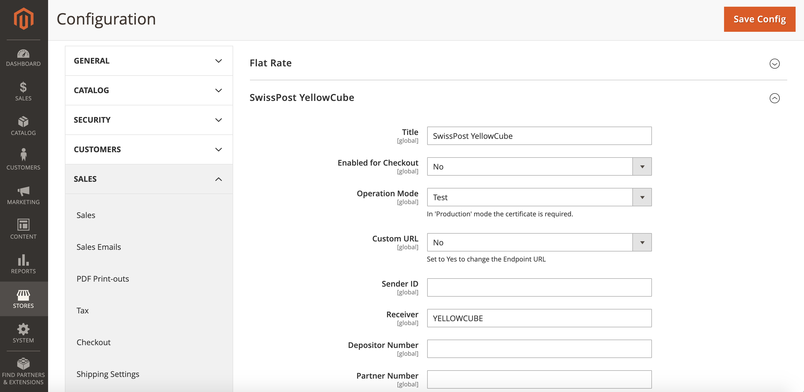
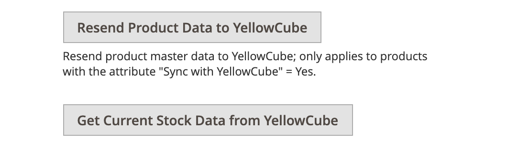

Configuration
Basic configuration
You will find the YellowCube configuration section under: Stores > Configuration > Sales > Shipping Methods.

The fields below SwissPost YellowCube need to be setup.
Fields obtained from the YellowCube:
- Sender ID: The shop ID.
- Receiver: The receiver value. The default value is set to
YELLOWCUBE. - Depositor Number: This number will be assigned to you by Swiss Post.
- Partner Number: The unique number in the YellowCube system.
- Plant-ID: The storage location.
Connection details:
- Title: The title of the plugin.
- Enabled for Checkout: Whether the extension is enabled in the checkout process or not.
- Operating mode: Choose between Testing, Production, or Development.
- In Testing mode orders are processed virtually. Documents, labels etc. are printed out and scanned. This mode is for testing purposes.
- Production mode needs to be set when the website is live and working.
- Development mode is only intended to be used by developers. YellowCube users should never use this mode.
- Custom URL: Whether to enable the custom endpoint URL.
- URL to the Endpoint: The YellowCube SOAP custom EntryPoint for the selected operating mode.
- Certificate Path and Filename: If the certificate authentication is used, provide path to the certificate file on the server in this field (relative to the folder of the Magento 2 YellowCube extension). For security reasons, the certificate must be placed outside of the public root directory.
- Certificate Password: The password to the certificate if this authentication method is used. For security reasons, it is recommended to protect your certificate with a password.
- Debug: This setting will enable logging and it is relevant for development purposes.
Shipping information:
- Shipping Method: The list of available shipping methods. You can choose one or multiple supported YellowCube shipping methods and define price for each of these shipping methods.
- Tara Factor: Gross Weight is required for YellowCube. This can be calculated with Tara Factor: Gross Weight = Net Weight x Tara Factor.
- Ship to Applicable Countries: The list of allowed countries for shipping purposes.
- Ship to Specific Countries: Use this list to select the allowed countries for shipping.
Note that you need to provide the IP address of your Magento 2 Shop to YellowCube for giving your shop access to YellowCube. This can also affect the configuration for any staging/development environments. Consult your dedicated service provider for more informations about that.
Every time you save the settings form all states and caches are cleared. Background processes will re-run with the next trigger. This reduces issues when switching between Testing / Production and different accounts. However product registration states remain stale.
Limitation: Do NOT connect multiple shop instances to the same YellowCube account as WAR request (hourly cron containing confirming shippings with track & trace) can not be shared.
Synchronisation
On the configuration form, you are able to use the following synchronisation options:
- Resend Product Data to YellowCube: Each product in your Magento 2 shop can be enabled for the synchronisation with YellowCube. Clicking this button will send all the relevant information to YellowCube about your products.
- Get Current Stock Data from YellowCube: This button will update the stock data for each YellowCube product in your catalog

Custom Shipping Methods
The list of known shipping methods can be extend in app/etc/config.php. For example:
'system' => [
'default' => [
'carriers' => [
'yellowcube' => [
'methods' => [
'eco' => [
'label' => 'PostPac Economy CHANGED',
'code' => 'ECO',
],
'extra' => [
'label' => 'Extra new option',
'code' => 'ECO EXTRA',
'real_code' => 'ECO',
'additional' => 'EXTRA',
],
],
],
],
],
],
Before making configuration changes make sure to export the whole configuration and then adjust it. See Export the configuration for more details.